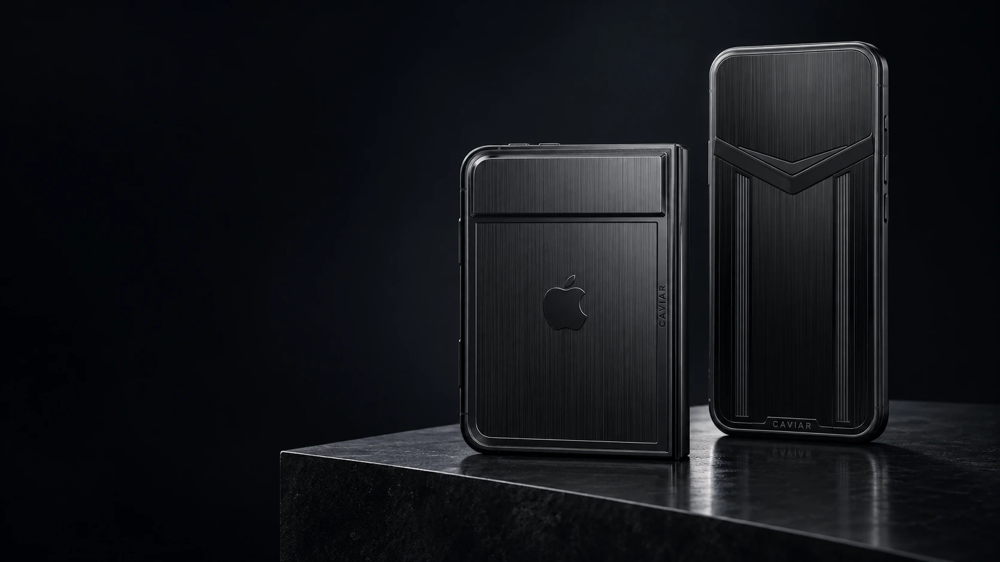
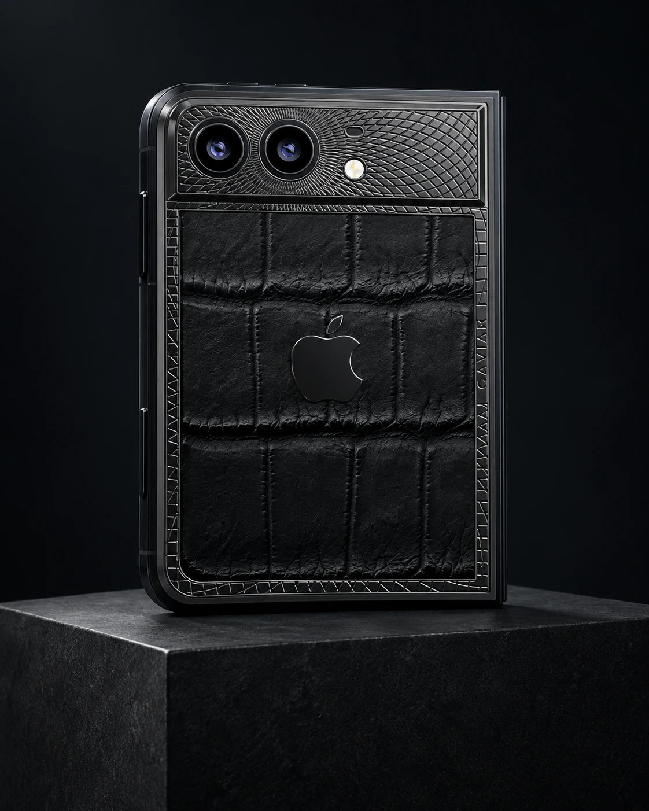
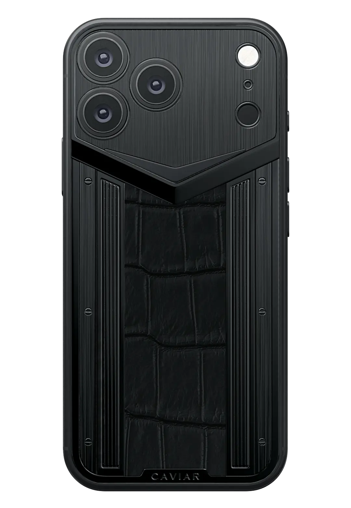
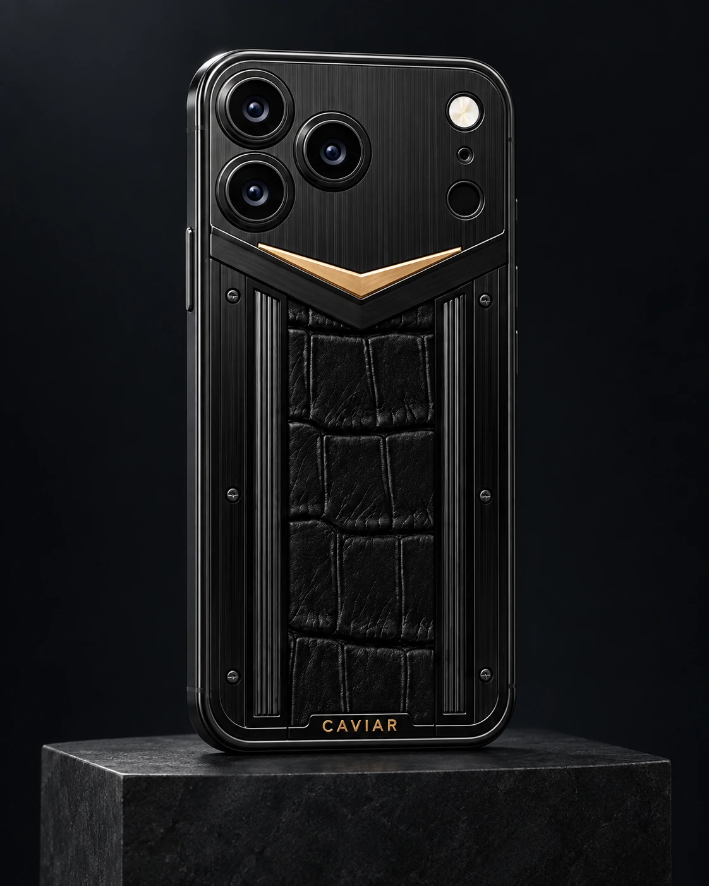
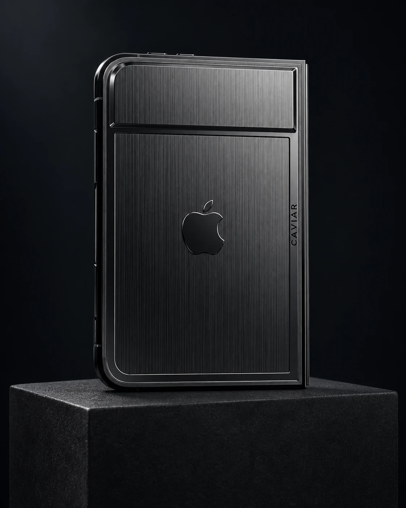
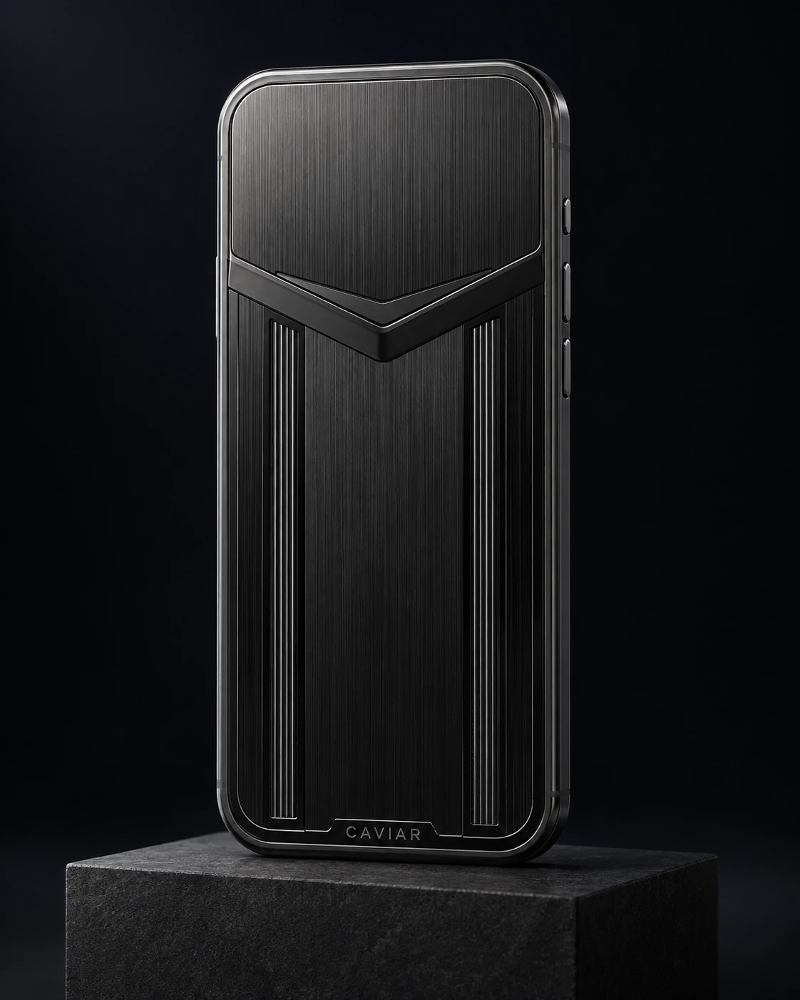

Caviar · iPhone 18 Pro / Pro Max · iPhone Duo
Black
Edition
Черный вне времени.

Black Edition представляет iPhone 18 Pro и iPhone Duo в черном исполнении Caviar.
В основе коллекции темные материалы и сдержанный дизайн. От моделей с натуральной кожей и золотыми деталями до цельных черных корпусов без основных камер.
Смотреть коллекциюИдея коллекции
Листайте дальшеЧерный вне времени.
Он не зависит от сезона и не нуждается в обновлении.
В Black Edition черный становится основой всей коллекции. Меняются материалы и детали, но общая идея остается неизменной.
Черный никогда
не выходит из моды.
Мы сделали его
главным.

Custom iPhone Duo
Titanium
Материал определяет характер.
Черная кожа крокодила сочетается с титаном, покрытым глубоким черным PVD.
Металлические детали и логотип Apple выдержаны в одной гамме, поэтому корпус выглядит почти цельным. Здесь главное не декор, а материал и его фактура.
Материалы и детали
- Натуральная кожа: Черная кожа крокодила.
- Титан: Металлические элементы с глубоким черным PVD-покрытием.
- Логотип Apple: Объемный черный логотип интегрирован в общую композицию.
- Тираж: 19 экземпляров.

Custom iPhone 18 Pro / Pro Max
Versus
Архитектура силы.
Черная кожа крокодила заключена в металлический каркас. Открытые винты оставлены на виду и становятся частью дизайна.
В Versus сильнее выражена инженерная эстетика. Конструкцию не пытаются скрыть. Она сама определяет внешний вид смартфона.
Материалы и детали
- Натуральная кожа: Черная кожа крокодила.
- Титан: Черные металлические элементы формируют каркас корпуса.
- Винты: Открытые винты становятся частью дизайна.
- Кастомная заставка Caviar: Уникальная заставка, разработанная художниками Caviar.
- Тираж: 19 экземпляров.

Custom iPhone 18 Pro / Pro Max
Signature
Один акцент. Личный почерк.
В основе модели черная кожа крокодила. Через центр корпуса проходит V-образная деталь с покрытием золотом 999 пробы.
Она напоминает галку, поставленную рядом с выбранным вариантом. Один золотой элемент меняет весь рисунок корпуса и становится главным акцентом модели.
Материалы и детали
- Натуральная кожа: Черная кожа крокодила.
- Золото: V-образная деталь покрыта золотом 999 пробы.
- Винты: Открытые декоративные элементы встроены в конструкцию корпуса.
- Кастомная заставка Caviar: Уникальная заставка, разработанная художниками Caviar.
- Тираж: 19 экземпляров.
Можно убрать еще больше.
Даже камеры.

Custom iPhone Duo
Ultimate
Без основных камер
У Ultimate нет блока основных камер. Верхняя часть корпуса превращена в цельную черную поверхность.
Титановая панель получила тонкую вертикальную шлифовку. При обычном освещении металл выглядит почти черным. Под направленным светом появляется холодный графитовый оттенок.
Черный логотип Apple встроен в панель и почти растворяется на ее поверхности. В результате задняя сторона iPhone Duo выглядит необычно чистой и монолитной.
Материалы и детали
- Титан: Черная титановая панель с вертикальной шлифовкой.
- Основные камеры: Отсутствуют.
- Логотип Apple: Черный логотип встроен в титановую панель.
- Кастомная заставка Caviar: Уникальная заставка, разработанная художниками Caviar.
- Тираж: 19 экземпляров.
Ultimate
Камеры исчезают.
Остается форма.

Custom iPhone 18 Pro / Pro Max
Supersonic
Предельное воплощение Black Edition
У Supersonic также нет блока основных камер. Его место занимает глухая титановая панель, и задняя сторона iPhone превращается в цельную черную поверхность.
Дизайн вдохновлен stealth-технологиями и сверхзвуковой авиацией. Сатинированный титан напоминает поверхность авиационной обшивки.
Supersonic доводит идею Black Edition до предела. Все привычные детали уходят на второй план, и главным становится сам силуэт устройства.
Материалы и детали
- Материал корпуса: Черный титан.
- Фактура: Сатинированная поверхность.
- Основные камеры: Отсутствуют.
- Верхняя панель: Глухая титановая поверхность вместо блока камер.
- Кастомная заставка Caviar: Уникальная заставка, разработанная художниками Caviar.
- Тираж: 19 экземпляров.
Supersonic
Без основных камер.
Без лишних деталей.
Лимитированная серия
19 экземпляров
каждой модели
экземпляров каждой модели
Каждый смартфон получает индивидуальный номер, подтверждающий его место в ограниченной серии.